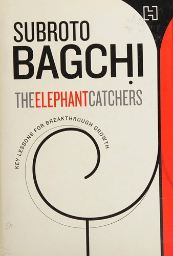

Library › Business & Startups
The Elephant Catchers: Key Lessons for Breakthrough Growth — Summary & Key Lessons

Scaling a company is not catching a bigger mouse. It is learning to catch elephants, and everything about your organization must change.
📖 OPEN THE FULL INTERACTIVE BREAKDOWN →🌐 Read it in Hindi, Hinglish, Gujarati, Tamil & 22 more languages — free, with audio.
💡 The Big Idea
Every founder dreams of scale, but scale is a different animal that requires different skills, structures and even different conversations. Drawing on MindTree's journey and dozens of interviews, Bagchi names the shifts that kill companies at every stage: founders who cannot let go of selling, boards that never grow up, brands that stay personal, and leaders who scale their egos faster than their organizations. The book's frame: what got you here is precisely what will drown you there, unless you consciously rebuild yourself along eleven dimensions.
🧠 The 8 Key Lessons
Lesson 1: Founders Must Sell, Then Must Stop
The Founder in Sales
Early stage: the founder IS the sales force; conviction cannot be delegated. But past a point, founder-led selling caps growth because the company's pipeline fits inside one person's calendar and relationships. The shift is building a sales institution: playbooks, territory design, a professional sales culture with its own career ladder, not a graveyard for failed engineers.
📖 Example: MindTree's early deals rode Bagchi's personal credibility; the company institutionalized key-account management and a professional sales organization so billion-dollar ambitions stopped requiring his signature presence in every room. Read the full example →
⚡ Do this: Calculate what percentage of your revenue depends on your personal relationships. If it is over 30 percent, your next hire is a sales leader, not an engineer.
Lesson 2: Brands Outgrow Their Founders or Die With Them
From Personal Brand to Institutional Brand
Startups sell on the founder's story; scaled companies sell on institutional promise. The transition feels like loss: the spotlight shifts, marketing budgets professionalize, customer promises become systemic rather than personal. Founders who cling to being the brand cap the company at their own bandwidth, and their absence becomes a business risk.
📖 Example: MindTree deliberately moved from founders-as-brand to MindTree-as-brand with professional CMO leadership, so customers bought delivery certainty rather than Bagchi's Rolodex, making growth independent of any one man's travel schedule. Read the full example →
⚡ Do this: Test your brand: could a stranger book, buy and recommend your product without ever hearing your name? If not, that is your growth ceiling.
Lesson 3: Boards Are Instruments, Not Decorations
Governance That Actually Steers
Most startup boards are investor report cards; mature boards are instruments of foresight, risk-taking and CEO development. Bagchi describes building a board with independent voices who challenge founders in private and protect them in public. The board conversation determines whether a company can take the big swing (acquisitions, new markets) without existential fear.
📖 Example: MindTree's board debates on acquiring LincScissors (Texas outsourcing firm) forced rigorous integration planning that later shaped its Europe strategy; a decorative board would have approved faster and learned nothing. Read the full example →
⚡ Do this: Add one independent voice to your board or advisors who has scaled past your current revenue, and give them explicit permission to contradict you monthly.
Lesson 4: Scale Requires Different Leaders, Not Just Bigger Ones
Leaders at Altitude
A leader who ran 50 people with personal supervision collapses at 500 unless they shift from doing to designing: metrics, cadences, leadership pipelines. Companies must re-tool leadership layers mid-flight: promote for altitude, not loyalty, and bring in outsiders for capabilities that do not exist internally. Sentiment at promotion time is the most expensive indulgence in scaling companies.
📖 Example: As MindTree crossed thousands of employees, leaders of business units were evaluated on building second-line depth, not personal heroics; those who hoarded responsibility were moved, however beloved. Read the full example →
⚡ Do this: For each of your leaders, write whether they are a doer, a manager or an institution-builder. Fund the transition of the willing and replace the rest kindly but quickly.
Lesson 5: The Customer Mix Must Be Redesigned, Not Just Grown
Escaping the Two-Customer Trap
Startups die of concentration: two customers fund everything and set the culture. Scaling demands deliberately designing a portfolio: anchor accounts for stability, growth accounts for expansion, experimental segments for the future. Pricing and service models must segment accordingly, or the biggest customer's demands dictate product direction and destroy margin.
📖 Example: MindTree deliberately built industry-vertical practices so no client dominated, enabling pricing power and insulating revenue when any single account paused spending in downturns. Read the full example →
⚡ Do this: Compute revenue share of your top two customers. Above 40 percent, redesign this quarter's sales targets to deliberately diversify, even if it slows top-line.
Lesson 6: Institutions Remember Through Systems, Not Sentiment
Culture at Altitude
Early culture lives in founder anecdotes; at scale it must live in processes: how you hire, what gets promoted, what gets punished. Bagchi argues codify the values into decision rituals (interview standards, promotion criteria, customer escalation rules) before the founding generation's stories become folklore nobody practises.
📖 Example: MindTree's 'classmates' culture (flat, open, first names) was institutionalized through onboarding rituals and physical space design, so a 3,000th employee experienced what the 30th did, without the founders in the room. Read the full example →
⚡ Do this: Pick one value you claim and write the three operational rituals that enforce it. If you cannot name them, you have posters, not culture.
Lesson 7: M&A Is a Growth Tool You Must Learn Before You Need
Eating Elephants Carefully
Acquisitions done from weakness (defensive, rushed) destroy value; acquisitions done from strength with integration design (culture, retention,client continuity) compound. Bagchi's account of MindTree's acquisitions shows the checklist: why this, why us, why now, and what happens to the people in week one. Most integration failures are leadership failures scheduled at signing.
📖 Example: MindTree's Europe-scale acquisition taught it that retention bonuses, founder transition design and client communication within 48 hours decide whether an acquisition is a purchase or an evacuation. Read the full example →
⚡ Do this: Draft your acquisition one-pager now, in peacetime: the three capabilities you would buy, your integration doctrine, and your week-one people plan.
Lesson 8: Founders Must Redesign Themselves Deliberately
The Founder's Own Metamorphosis
The book's spine: every organizational shift demands a personal shift. Founders must ask what the company at the next stage needs them to be: statesman, product visionary, capital raiser, or even quietly absent. The honest inventory (what I love, what I am good at, what the company now needs) is the hardest strategic document a founder ever writes.
📖 Example: Bagchi himself moved from sales hero to MindTree chairman shaping vision and governance, then left to lead Odisha's skill-development mission, modeling that founders can redesign into entirely new callings rather than clinging to titles. Read the full example →
⚡ Do this: Write three columns: what I love doing, what the company at 10x needs from me, where they overlap. Make your next 12 months' calendar match column three.
✅ 5-Step Action Plan
- Reduce founder-dependent revenue below 30 percent by building a real sales institution.
- Shift your brand from personal story to institutional promise within 12 months.
- Recruit one independent advisor who has scaled past your size and meet monthly.
- Design your customer portfolio deliberately: anchors, growth, experiments.
- Write the founder-redesign memo: love, need, overlap, and rebuild your calendar around it.
⚠️ When This Doesn't Work
Bagchi writes from MindTree's (overall successful) vantage point, so scaling lessons skew toward IT services; capital-light or product companies may need different governance shapes. Some anecdotes are anonymized, so you cannot verify the failures he alludes to. Read the frameworks, then pressure-test them against your industry's economics.
💀 The Graveyard Proves It
☕ V.G. Siddhartha — The Coffee King Who Carried It Alone. Burn: A founder India mourned. Read the full case study →
💬 Best Quotes from The Elephant Catchers: Key Lessons for Breakthrough Growth
- “The skills that build a company are different from the skills that scale it.”
- “Institutionalize or suffocate: the founder's dilemma in five words.”
- “Your growth ceiling is the hardest conversation you are avoiding.”
Interactive version: mark lessons as read, listen in your language, share quote cards.